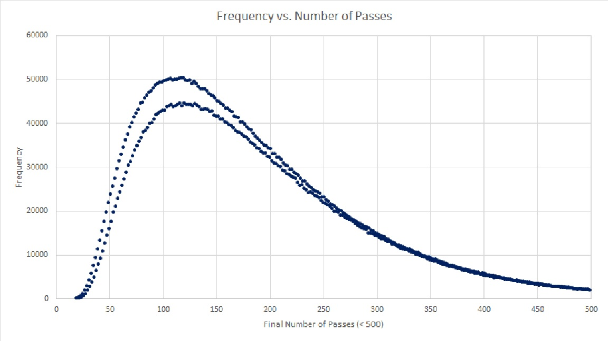

To celebrate Thanksgiving, you and 19 of your family members are seated at a circular table (socially distanced, of course). Everyone at the table would like a helping of cranberry sauce, which happens to be in front of you at the moment. Instead of passing the sauce around in a circle, you pass it randomly to the person seated directly to your left or to your right. They then do the same, passing it randomly either to the person to their left or right. This continues until everyone has, at some point, received the cranberry sauce. Of the 20 people in the circle, who has the greatest chance of being the last to receive the cranberry sauce?
To solve the problem, I created the web app below. Full source code here.
It looks like everyone is equally likely to be the last person to get the sauce.
I also calculated the frequency of the final number of passes for each turn. After 10,000,000 iterations, I got the graph below. I don't know why it looks like two functions. 
To run the simulation, click "Run Simulation"